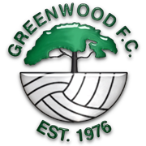

I have been a member of Bishopstown GAA Club since the age of 5. I play both hurling and football with my club.
GAA has helped me to develop many different skills.
I have learned a great deal of discipline from playing these sports.
I have also learned how to co-operate with others and how to work as part of a team.
GAA Achievements
Year
Accolades
2012
U14 Hurling Championship Winners
2016
Minor Football League Winner
2017
Minor Hurling Championship Winner
2018
U21 Football Championship Winners
Soccer
2005-2017

I was a member of Greenwood FC in Togher for 12 years. I started playing when I was 6 years old and only recently
stopped playing in 2017.
Soccer also helped me to develop many essential skills and better understand the
importance of teamwork.